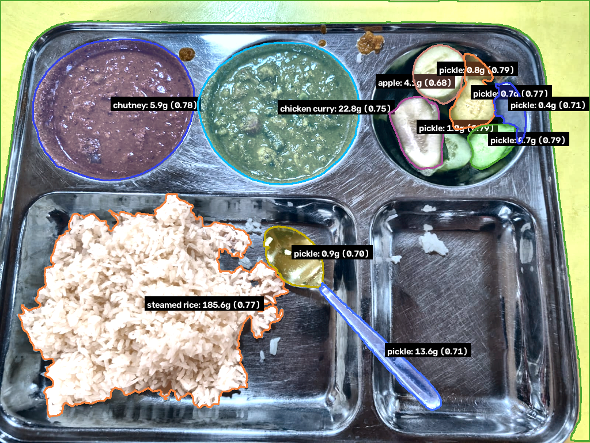

{
"resolution": "1600x1204",
"channels": 3,
"dtype": "uint8",
"expected_items": null,
"plate_profile": null,
"debug": false
}
{
"food_items": [
{
"name": "steamed rice",
"volume_ml": 172.0,
"mass_g": 185.6,
"calories": 241.3,
"protein": 5.0,
"carbs": 52.0,
"fat": 0.6,
"confidence": 0.7651,
"class_label": "steamed rice",
"class_confidence": 0.5212
},
{
"name": "apple",
"volume_ml": 5.1,
"mass_g": 4.1,
"calories": 4.1,
"protein": 0.1,
"carbs": 0.6,
"fat": 0.1,
"confidence": 0.6771,
"class_label": "apple",
"class_confidence": 0.4195
},
{
"name": "chutney",
"volume_ml": 5.6,
"mass_g": 5.9,
"calories": 5.9,
"protein": 0.1,
"carbs": 0.9,
"fat": 0.2,
"confidence": 0.7809,
"class_label": "chutney",
"class_confidence": 0.5373
},
{
"name": "chicken curry",
"volume_ml": 20.6,
"mass_g": 22.8,
"calories": 32.0,
"protein": 3.4,
"carbs": 0.9,
"fat": 1.8,
"confidence": 0.7539,
"class_label": "chicken curry",
"class_confidence": 0.4686
},
{
"name": "pickle",
"volume_ml": 0.9,
"mass_g": 1.0,
"calories": 1.2,
"protein": 0.0,
"carbs": 0.1,
"fat": 0.1,
"confidence": 0.792,
"class_label": "pickle",
"class_confidence": 0.5953
},
{
"name": "pickle",
"volume_ml": 0.8,
"mass_g": 0.9,
"calories": 1.1,
"protein": 0.0,
"carbs": 0.1,
"fat": 0.1,
"confidence": 0.7043,
"class_label": "pickle",
"class_confidence": 0.3771
},
{
"name": "pickle",
"volume_ml": 12.3,
"mass_g": 13.6,
"calories": 16.3,
"protein": 0.1,
"carbs": 1.4,
"fat": 1.4,
"confidence": 0.7144,
"class_label": "pickle",
"class_confidence": 0.3955
},
{
"name": "pickle",
"volume_ml": 0.7,
"mass_g": 0.8,
"calories": 1.0,
"protein": 0.0,
"carbs": 0.1,
[
{
"step": "Input",
"message": "Original image saved",
"params": {
"resolution": "1600x1204"
},
"elapsed_s": 0.1749,
"input_file": null,
"output_file": "original.png",
"timestamp": "2026-10-30T20:59:26.020083"
},
{
"step": "Pipeline",
"message": "Step 1 — Preprocessing & Perspective Warp",
"params": {},
"elapsed_s": null,
"input_file": null,
"output_file": null,
"timestamp": "2026-10-30T20:59:26.020250"
},
{
"step": "Quality Gate",
"message": "PASS",
"params": {
"blur_score": 351.14,
"tilt_deg": 25.0
},
"elapsed_s": null,
"input_file": null,
"output_file": null,
"timestamp": "2026-10-30T20:59:26.240619"
},
{
"step": "Preprocessing",
"message": "Complete",
"params": {
"output_size": "1024x770"
},
"elapsed_s": 0.5913,
"input_file": null,
"output_file": null,
"timestamp": "2026-10-30T20:59:26.611687"
},
{
"step": "Pipeline",
"message": "Step 2 — Compartments & Scale",
"params": {},
"elapsed_s": null,
"input_file": null,
"output_file": null,
"timestamp": "2026-10-30T20:59:26.612000"
},
{
"step": "Scale Calibration",
"message": "Fallback to bbox-based calibration",
"params": {
"cm_per_pixel": 0.03559,
"method": "bbox"
},
"elapsed_s": null,
"input_file": null,
"output_file": null,
"timestamp": "2026-10-30T20:59:26.652932"
},
{
"step": "Compartment Detection",
"message": "Scale computed",
"params": {
"cm_per_pixel": 0.03559,
"pixel_area_cm2": 0.00126671,
"compartments": 0,
"scale_confidence": 0.7
},
"elapsed_s": 0.0409,
"input_file": null,
"output_file": null,
"timestamp": "2026-10-30T20:59:26.653222"
},
{
"step": "Pipeline",
"message": "Step 3 — Depth Estimation",
"params": {},
"elapsed_s": null,
"input_file": null,
"output_file": null,
| Step | Message | Params | Time |
|---|---|---|---|
| Input | Original image saved | {"resolution": "1600x1204"} | 0.1749s |
| Pipeline | Step 1 — Preprocessing & Perspective Warp | — | — |
| Quality Gate | PASS | {"blur_score": 351.14, "tilt_deg": 25.0} | — |
| Preprocessing | Complete | {"output_size": "1024x770"} | 0.5913s |
| Pipeline | Step 2 — Compartments & Scale | — | — |
| Scale Calibration | Fallback to bbox-based calibration | {"cm_per_pixel": 0.03559, "method": "bbox"} | — |
| Compartment Detection | Scale computed | {"cm_per_pixel": 0.03559, "pixel_area_cm2": 0.00126671, "compartments": 0, "scale_confidence": 0.7} | 0.0409s |
| Pipeline | Step 3 — Depth Estimation | — | — |
| Depth Estimation | Complete | — | 8.9409s |
| Pipeline | Step 4 — Segmentation | — | — |
| Segmentation | 11 food items found | — | 202.1799s |
| Pipeline | Step 5 — Food Classification (OCR-constrained) | — | — |
| Classification | Complete | {"n_items": 11, "ocr_labels_used": false} | 24.5808s |
| Pipeline | Step 6 — Hungarian Label Assignment | — | — |
| Pipeline | Step 7 — Volume & Mass Estimation | — | — |
| Volume Estimation | Computed mass for 11 items | {"total_items": 11} | 0.1600s |
| Pipeline | ✅ Pipeline complete | {"total_food_items": 11, "avg_confidence": 0.7505, "scale_method": "bbox"} | 237.0400s |